PIPAC Arm 3 comparative analysis
heinin
2025-03-19
Last updated: 2026-04-02
Checks: 5 2
Knit directory: PIPAC_spatial/
This reproducible R Markdown analysis was created with workflowr (version 1.7.1). The Checks tab describes the reproducibility checks that were applied when the results were created. The Past versions tab lists the development history.
The R Markdown file has unstaged changes. To know which version of
the R Markdown file created these results, you’ll want to first commit
it to the Git repo. If you’re still working on the analysis, you can
ignore this warning. When you’re finished, you can run
wflow_publish to commit the R Markdown file and build the
HTML.
Great job! The global environment was empty. Objects defined in the global environment can affect the analysis in your R Markdown file in unknown ways. For reproduciblity it’s best to always run the code in an empty environment.
The command set.seed(20240917) was run prior to running
the code in the R Markdown file. Setting a seed ensures that any results
that rely on randomness, e.g. subsampling or permutations, are
reproducible.
Great job! Recording the operating system, R version, and package versions is critical for reproducibility.
Nice! There were no cached chunks for this analysis, so you can be confident that you successfully produced the results during this run.
Using absolute paths to the files within your workflowr project makes it difficult for you and others to run your code on a different machine. Change the absolute path(s) below to the suggested relative path(s) to make your code more reproducible.
| absolute | relative |
|---|---|
| /home/hnatri/PIPAC_spatial/ | . |
| /home/hnatri/PIPAC_spatial/code/PIPAC_colors_themes.R | code/PIPAC_colors_themes.R |
| /home/hnatri/PIPAC_spatial/code/plot_functions.R | code/plot_functions.R |
Great! You are using Git for version control. Tracking code development and connecting the code version to the results is critical for reproducibility.
The results in this page were generated with repository version 1ad97ad. See the Past versions tab to see a history of the changes made to the R Markdown and HTML files.
Note that you need to be careful to ensure that all relevant files for
the analysis have been committed to Git prior to generating the results
(you can use wflow_publish or
wflow_git_commit). workflowr only checks the R Markdown
file, but you know if there are other scripts or data files that it
depends on. Below is the status of the Git repository when the results
were generated:
Ignored files:
Ignored: PDX_CAF_cluster_markers.tsv
Ignored: PDX_CAF_nonimmune_cluster_markers.tsv
Ignored: analysis/figure/
Ignored: cell_annotation_final_topmarkers.tsv
Ignored: cell_immune_cluster_marker_annotations.tsv
Ignored: cell_nonimmune_cluster_marker_annotations.tsv
Ignored: celltype_markers.tsv
Ignored: code/.RData
Ignored: code/.Rapp.history
Ignored: code/.Rhistory
Ignored: code/Proximity_analysis/.DS_Store
Ignored: code/Proximity_analysis/data/
Ignored: code/Proximity_analysis/output/
Ignored: code/RSC_latest_EDM_2025-08-06/
Ignored: code/scGSEA_CAFs.Rout
Ignored: immune_cluster_marker_annotations_2ndpass.tsv
Ignored: immune_prelim_annot_topmarkers.tsv
Ignored: nonimmune_cluster_marker_annotations_2ndpass.tsv
Ignored: nonimmune_prelim_annot_topmarkers.tsv
Ignored: output/proximity_compiled.tsv
Ignored: output/tumor_proximity_compiled.tsv
Ignored: tumor_posttreatment_proximity_compiled.tsv
Ignored: tumor_pretreatment_proximity_compiled.tsv
Ignored: tumor_proximity_compiled.tsv
Unstaged changes:
Modified: analysis/PDX_CAF_scRNAseq_CMS.Rmd
Modified: analysis/PDX_CAF_scRNAseq_analysis.Rmd
Modified: analysis/arm3_comparative_analysis.Rmd
Modified: analysis/immune_analysis.Rmd
Modified: analysis/pretty_plots.Rmd
Modified: ncells.tsv
Note that any generated files, e.g. HTML, png, CSS, etc., are not included in this status report because it is ok for generated content to have uncommitted changes.
These are the previous versions of the repository in which changes were
made to the R Markdown
(analysis/arm3_comparative_analysis.Rmd) and HTML
(docs/arm3_comparative_analysis.html) files. If you’ve
configured a remote Git repository (see ?wflow_git_remote),
click on the hyperlinks in the table below to view the files as they
were in that past version.
| File | Version | Author | Date | Message |
|---|---|---|---|---|
| Rmd | cbf7742 | heinin | 2026-03-13 | Updated CAF analyses |
| html | cbf7742 | heinin | 2026-03-13 | Updated CAF analyses |
| Rmd | 5e65497 | heinin | 2026-03-06 | Updated PDX CAF analysis |
| Rmd | ff362c6 | heinin | 2026-02-27 | Updated PDX educated CAF sc analysis |
| html | ff362c6 | heinin | 2026-02-27 | Updated PDX educated CAF sc analysis |
| Rmd | cab1750 | heinin | 2026-02-11 | Updated annotation and Freeze version of data. Added PDX CAF analysis and Xenium fibroblast analysis |
| html | cab1750 | heinin | 2026-02-11 | Updated annotation and Freeze version of data. Added PDX CAF analysis and Xenium fibroblast analysis |
| Rmd | 6872c5a | heinin | 2025-11-24 | Updated analyses, added CAF bulk-analysis |
| Rmd | 7c46eb3 | heinin | 2025-09-29 | Updated to denoised transcript data |
| html | 7c46eb3 | heinin | 2025-09-29 | Updated to denoised transcript data |
| Rmd | 3bbda19 | heinin | 2025-05-13 | Updated annotations, added feature expression by celltype |
| html | 3bbda19 | heinin | 2025-05-13 | Updated annotations, added feature expression by celltype |
Load packages
suppressPackageStartupMessages({
library(workflowr)
library(arrow)
library(Seurat)
library(SeuratObject)
library(SeuratDisk)
library(tidyverse)
library(tibble)
library(ggplot2)
library(ggpubr)
library(ggrepel)
library(googlesheets4)
library(workflowr)
library(patchwork)
library(ggpmisc)
library(scProportionTest)})Environment variables and helper functions
setwd("/home/hnatri/PIPAC_spatial/")
set.seed(9999)
options(scipen = 99999)
options(ggrepel.max.overlaps = Inf)
source("/home/hnatri/PIPAC_spatial/code/PIPAC_colors_themes.R")
source("/home/hnatri/PIPAC_spatial/code/plot_functions.R")Marker information
# Markers
main_plot_features <- c("PTPRC", "CD3D", "CD3E", "CD4", "CD8A", "JAK1", "JAK2", "STAT4", "STAT3", "TIGIT", "GZMB", "SELL", "CD19", "CD68", "CD44", "MARCO", "APOE", "C1QB", "C1QBP", "CD163", "SPP1", "VCAN", "MUC5AC", "NOTCH3", "RGS5", "MS4A1", "PGA5", "PLVAP", "CCL21", "LYVE", "SPARCL1", "FN1", "DCN", "LUM", "COL1A2", "PDPN", "ACTA2", "LMNA", "EGR3", "TP53", "JUN", "FOS", "BRAF", "KIT", "SOX9", "RNF43", "EPCAM", "PECAM", "CEACAM", "TGFB1", "JUNB", "TCF7", "GZMA", "GZMK", "CD47", "CD74", "LYZ", "TREM2", "CD247", "COL5A1", "SPARC", "CD36", "CTLA4", "RGS1", "CCL2", "SELENOP", "LYVE1", "CTSD", "MMP9", "CDK1", "FLT1", "RAMP2", "CCL14", "MCAM", "NRP1", "CEACAM6", "IL32", "TGFBI", "VEGFA", "LAMP1", "IGFBP7", "POSTN", "C1S", "C1R", "CSF1", "NOTCH1", "FOXP3", "IL2RB", "TUBA1B", "S100A9", "C3", "CXCR2", "SDC1", "CD38", "IGHG1", "PRDX4", "ICAM1", "GATA2", "CXCL3")
mycafs <- c("TGFB1", "ACTA2", "TAGLN") #"HOPX", "MYL9"
icafs <- c("IL6", "CXCL12", "CXCL14") #"CXCL13",
abcafs <- c("CD74", "HLA-DPB1", "HLA-DPB2", "HLA-DQA1", "HLA-DRA", "HLA-DRB1")
ficafs <- c("SFRP2", "SFRP4", "COMP", "CXCL14", "PLA2G2A", "ASPN")
main_plot_features <- c(main_plot_features, mycafs, icafs, abcafs, ficafs)
main_plot_features <- unique(main_plot_features)
gs4_deauth()
metadata <- gs4_get("https://docs.google.com/spreadsheets/d/1sXXwOreLxjMSUoPt79c6jmaQpluWkaxA5P5HfDsed3I/edit?usp=sharing")
markers <- read_sheet(metadata, sheet = "Markers")
final_annotations <- read_sheet(metadata, sheet = "CT update clean")
# Cell type markers by group
gs4_deauth()
markers_by_group <- gs4_get("https://docs.google.com/spreadsheets/d/1w0wrL-5KwNEWi_VpmriN7YmfwpBPlEYX0MKlwI2ZQu8/edit?usp=sharing")
markers_by_group <- read_sheet(markers_by_group, sheet = "Markers by group")Import and subset data, keeping cell types with >500 cells
seurat_data <- readRDS("/tgen_labs/banovich/PIPAC/Seurat/Freeze/cell_merged_spatial_filtered_splitsamples_clustered_NN30_PC50_Seurat_denoIST_annotated_updated.rds")
# Colors
celltype_final <- as.factor(sort(unique(seurat_data$Celltype_Final)))
celltype_final_col <- colorRampPalette(brewer.pal(10, "Paired"))(nb.cols <- length(celltype_final))
names(celltype_final_col) <- levels(celltype_final)
pipac_celltype_col <- celltype_final_col
DefaultAssay(seurat_data) <- "RNA"
seurat_data <- seurat_data %>%
NormalizeData() %>%
ScaleData()
seurat_arm3 <- subset(seurat_data, subset = Arm == "Arm3")
seurat_arm3 <- seurat_arm3 %>%
NormalizeData() %>%
ScaleData()
table(seurat_arm3$Tissue, seurat_arm3$Timepoint)
0 6
Normal 22896 31570
Tumor 55337 40579# pre tumor cells: 3296+3296
# post: 829
# ((3296+3296)-829)/(3296+3296)
keeps <- table(seurat_arm3$Celltype_Final) %>%
as.data.frame() %>%
filter(Freq > 500)
seurat_arm3_subset <- subset(seurat_arm3, subset = Celltype_Final %in% keeps$Var1)
table(seurat_arm3_subset$Celltype_Final)
B1 Endo1 Endo2 Endo5 Endo6
636 981 1021 6444 4239
Endo7 Endo8 Endo9 F13 F14
1623 1416 658 2308 7883
F15 F16 F20 F23 F24
11141 6308 1571 2848 9318
F27 F3 F4 F5 F6
2832 4003 2027 15968 554
F7 F8 L2 L5 M10
652 1105 592 5146 660
M13 M2 M4 M5 M6
6126 3598 806 3149 1174
M7 M9 Neut1 Peri1 Peri2
1169 806 1401 3638 3959
Peri3 Peri5 Peri6 Peri8 Plasma4
535 2753 2065 1323 859
TumorEpi1 TumorEpi4 TumorEpi5 Unclassified10 Unclassified3
1425 3939 1952 921 2005
Unclassified6 Unclassified7 Unclassified8
1557 1219 1201 table(seurat_arm3_subset$Celltype_Final, seurat_arm3_subset$Tissue)
Normal Tumor
B1 386 250
Endo1 799 182
Endo2 381 640
Endo5 2909 3535
Endo6 2028 2211
Endo7 753 870
Endo8 842 574
Endo9 433 225
F13 713 1595
F14 3016 4867
F15 2770 8371
F16 2757 3551
F20 340 1231
F23 564 2284
F24 4959 4359
F27 692 2140
F3 2247 1756
F4 948 1079
F5 4994 10974
F6 103 451
F7 83 569
F8 263 842
L2 252 340
L5 1637 3509
M10 298 362
M13 3115 3011
M2 1029 2569
M4 40 766
M5 1256 1893
M6 236 938
M7 505 664
M9 293 513
Neut1 548 853
Peri1 2161 1477
Peri2 1671 2288
Peri3 145 390
Peri5 1230 1523
Peri6 586 1479
Peri8 551 772
Plasma4 37 822
TumorEpi1 17 1408
TumorEpi4 1 3938
TumorEpi5 1 1951
Unclassified10 375 546
Unclassified3 687 1318
Unclassified6 387 1170
Unclassified7 470 749
Unclassified8 736 465All tumors
Cell type proportions by sample and sample type
create_barplot(seurat_arm3_subset,
group_var = "Sample",
plot_var = "Celltype_Final",
plot_levels = sort((unique(seurat_arm3_subset$Celltype_Final))),
group_levels = sort(unique(seurat_arm3_subset$Sample)),
plot_colors = pipac_celltype_col,
var_names = c("Frequency (%)", ""),
legend_title = "Celltype")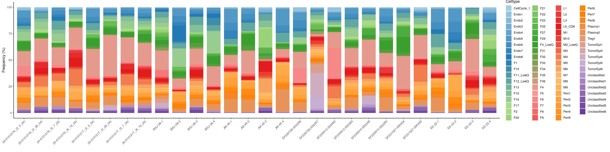
Cell type proportions by timepoint in tumors
arm3_tumor <- subset(seurat_arm3_subset, subset = Tissue == "Tumor")
create_barplot(arm3_tumor,
group_var = "Timepoint",
plot_var = "Celltype_Final",
plot_levels = sort((unique(seurat_arm3_subset$"Celltype_Final"))),
group_levels = sort(unique(seurat_arm3_subset$Timepoint)),
plot_colors = pipac_celltype_col,
var_names = c("Frequency (%)", ""),
legend_title = "Celltype")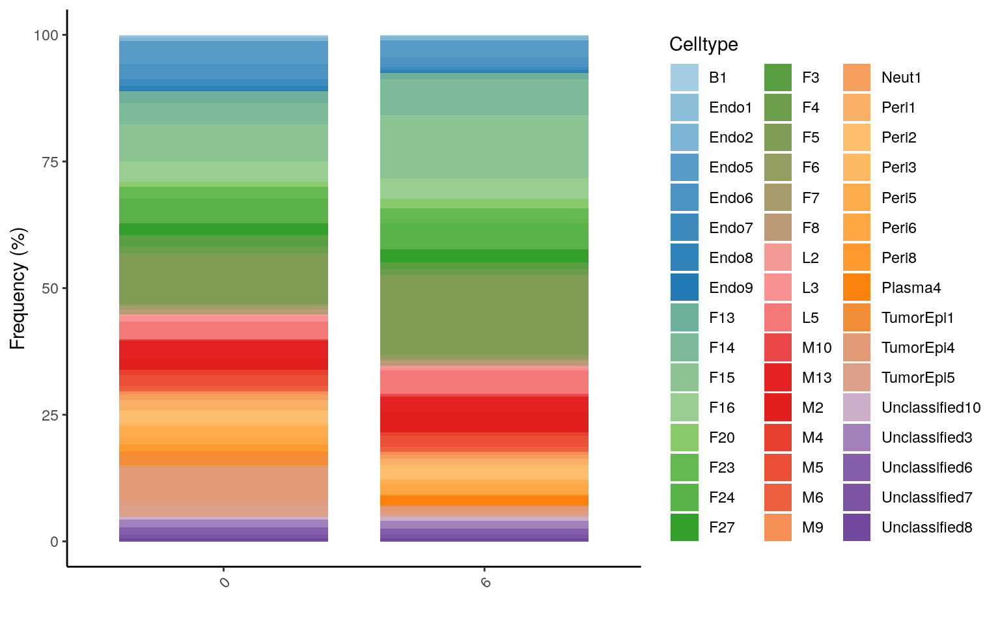
Cell type proportions by timepoint in tumor-adjacent samples
arm3_normal <- subset(seurat_arm3_subset, subset = Tissue == "Normal")
create_barplot(arm3_normal,
group_var = "Timepoint",
plot_var = "Celltype_Final",
plot_levels = sort((unique(seurat_arm3_subset$"Celltype_Final"))),
group_levels = sort(unique(seurat_arm3_subset$Timepoint)),
plot_colors = pipac_celltype_col,
var_names = c("Frequency (%)", ""),
legend_title = "Celltype")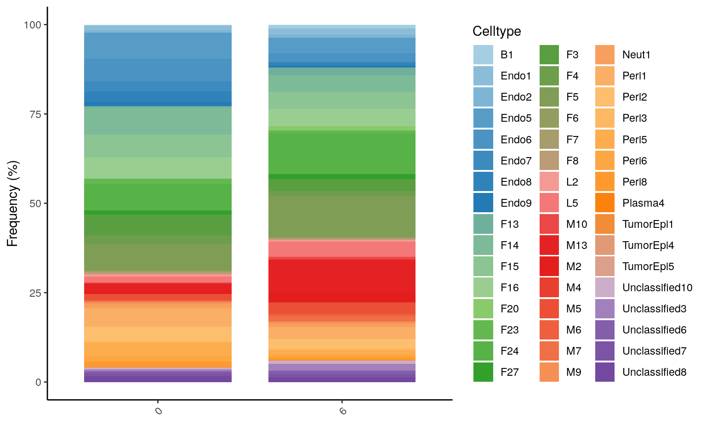
Cell numbers in tumor and normal across all samples
ct_table <- as.data.frame(table(seurat_arm3_subset$"Celltype_Final", seurat_arm3_subset$Tissue))
colnames(ct_table) <- c("Celltype", "Tissue", "Freq")
ct_table <- spread(ct_table, Celltype, Freq)
# Converting to percetange
#ct_table[,2:length(ct_table)] <- (ct_table[,2:length(ct_table)]/rowSums(ct_table[,2:length(ct_table)]))*100
ct_table <- gather(ct_table, Celltype, Freq, names(ct_table)[2:length(names(ct_table))], factor_key=TRUE)
ct_table$Tissue <- factor(ct_table$Tissue, levels = c("Normal", "Tumor"))
ggplot(ct_table, aes(x = Tissue, y = Freq, fill = Celltype)) +
geom_bar(stat="identity", position='stack', width = 0.8) +
scale_fill_manual(name = "Celltype", values = pipac_celltype_col) +
xlab("") +
ylab("Cell count") +
theme_classic() +
theme(axis.text.x = element_text(angle = 45, vjust = 1, hjust=1))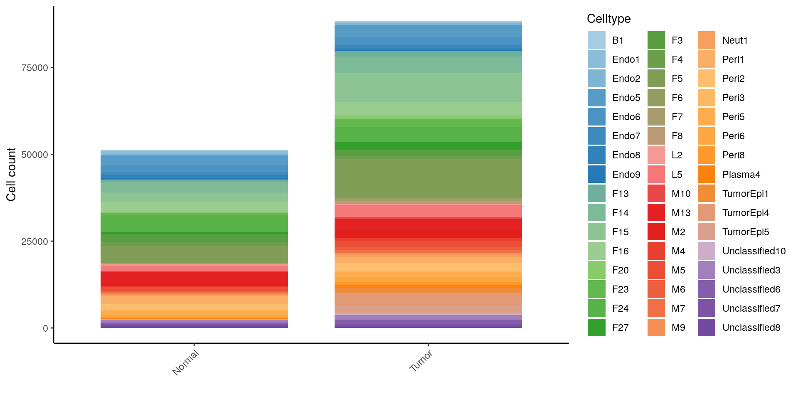
Subsetting arm 3 tumor and tumor adjacent, keeping cell types with >300 cells
keeps <- table(arm3_tumor$Celltype_Final) %>%
as.data.frame() %>%
filter(Freq > 500)
arm3_tumor <- subset(arm3_tumor, subset = Celltype_Final %in% keeps$Var1)
arm3_tumor <- arm3_tumor %>%
NormalizeData() %>%
ScaleData()
keeps <- table(arm3_normal$Celltype_Final) %>%
as.data.frame() %>%
filter(Freq > 500)
arm3_normal <- subset(arm3_normal, subset = Celltype_Final %in% keeps$Var1)
arm3_normal <- arm3_normal %>%
NormalizeData() %>%
ScaleData()
table(arm3_tumor$Celltype_Final)
Endo2 Endo5 Endo6 Endo7 Endo8
640 3535 2211 870 574
F13 F14 F15 F16 F20
1595 4867 8371 3551 1231
F23 F24 F27 F3 F4
2284 4359 2140 1756 1079
F5 F7 F8 L5 M13
10974 569 842 3509 3011
M2 M4 M5 M6 M7
2569 766 1893 938 664
M9 Neut1 Peri1 Peri2 Peri5
513 853 1477 2288 1523
Peri6 Peri8 Plasma4 TumorEpi1 TumorEpi4
1479 772 822 1408 3938
TumorEpi5 Unclassified10 Unclassified3 Unclassified6 Unclassified7
1951 546 1318 1170 749 table(arm3_tumor$Celltype_Final, arm3_tumor$Tissue)
Tumor
Endo2 640
Endo5 3535
Endo6 2211
Endo7 870
Endo8 574
F13 1595
F14 4867
F15 8371
F16 3551
F20 1231
F23 2284
F24 4359
F27 2140
F3 1756
F4 1079
F5 10974
F7 569
F8 842
L5 3509
M13 3011
M2 2569
M4 766
M5 1893
M6 938
M7 664
M9 513
Neut1 853
Peri1 1477
Peri2 2288
Peri5 1523
Peri6 1479
Peri8 772
Plasma4 822
TumorEpi1 1408
TumorEpi4 3938
TumorEpi5 1951
Unclassified10 546
Unclassified3 1318
Unclassified6 1170
Unclassified7 749table(arm3_normal$Celltype_Final)
Endo1 Endo5 Endo6 Endo7 Endo8
799 2909 2028 753 842
F13 F14 F15 F16 F23
713 3016 2770 2757 564
F24 F27 F3 F4 F5
4959 692 2247 948 4994
L5 M13 M2 M5 M7
1637 3115 1029 1256 505
Neut1 Peri1 Peri2 Peri5 Peri6
548 2161 1671 1230 586
Peri8 Unclassified3 Unclassified8
551 687 736 table(arm3_normal$Celltype_Final, arm3_normal$Tissue)
Normal
Endo1 799
Endo5 2909
Endo6 2028
Endo7 753
Endo8 842
F13 713
F14 3016
F15 2770
F16 2757
F23 564
F24 4959
F27 692
F3 2247
F4 948
F5 4994
L5 1637
M13 3115
M2 1029
M5 1256
M7 505
Neut1 548
Peri1 2161
Peri2 1671
Peri5 1230
Peri6 586
Peri8 551
Unclassified3 687
Unclassified8 736Tumor cell type proportions by response
table(seurat_arm3_subset$Patient_ID)
table(as.character(seurat_arm3_subset$Sample))
seurat_arm3_subset@meta.data %>%
dplyr::select(c("Patient_ID", "Sample")) %>%
distinct()
table(seurat_arm3_subset$BestResponse)
create_barplot(seurat_arm3_subset,
group_var = "BestResponse",
plot_var = "Celltype_Final",
plot_levels = sort((unique(arm3_tumor$"Celltype_Final"))),
group_levels = sort(unique(arm3_tumor$BestResponse)),
plot_colors = pipac_celltype_col,
var_names = c("Frequency (%)", ""),
legend_title = "Celltype")Testing for significance with scProportionTest
prop_test <- sc_utils(seurat_arm3_subset)
prop_test <- permutation_test(
prop_test, cluster_identity = "Celltype_Final",
sample_1 = "PR", sample_2 = "SD",
sample_identity = "BestResponse")
permutation_plot(prop_test) +
ggtitle("All tumors")Tumor-adjacent cell type proportions by response
table(seurat_arm3_subset$Patient_ID)
table(as.character(seurat_arm3_subset$Sample))
seurat_arm3_subset@meta.data %>%
dplyr::select(c("Patient_ID", "Sample")) %>%
distinct()
table(seurat_arm3_subset$BestResponse)
create_barplot(seurat_arm3_subset,
group_var = "BestResponse",
plot_var = "Celltype_Final",
plot_levels = sort((unique(seurat_arm3_subset$"Celltype_Final"))),
group_levels = sort(unique(seurat_arm3_subset$BestResponse)),
plot_colors = pipac_celltype_col,
var_names = c("Frequency (%)", ""),
legend_title = "Celltype")Testing for significance with scProportionTest
prop_test <- sc_utils(arm3_normal)
prop_test <- permutation_test(
prop_test, cluster_identity = "Celltype_Final",
sample_1 = "PR", sample_2 = "SD",
sample_identity = "BestResponse")
permutation_plot(prop_test) +
ggtitle("All tumors")Cell type proportion correlations with survival time
Linear regression
metadata <- seurat_arm3_subset@meta.data %>%
dplyr::select("Patient_ID", "DISEASESITE", "osmonths", "pfsmonths", "No_of_PIPACs") %>%
distinct()
prop_table <- as.data.frame(table(seurat_arm3_subset@meta.data$"Celltype_Final", as.character(seurat_arm3@meta.data$Patient_ID)))
colnames(prop_table) <- c("Celltype_Final", "Patient_ID", "Freq")
prop_table <- spread(prop_table, Celltype_Final, Freq)
# Converting to percentage
prop_table[,2:length(prop_table)] <- (prop_table[,2:length(prop_table)]/rowSums(prop_table[,2:length(prop_table)]))*100
prop_table <- gather(prop_table, Celltype_Final, Freq, names(prop_table)[2:length(names(prop_table))], factor_key=TRUE)
# Adding survival data
prop_survival <- merge(prop_table, metadata, by = "Patient_ID")
prop_survival$osmonths <- unlist(prop_survival$osmonths)
prop_survival$pfmonths <- unlist(prop_survival$pfmonths)
# Plotting
plot_list <- lapply(sort(unique(seurat_arm3_subset$"Celltype_Final")), function(ct){
prop_survival %>%
filter("Celltype_Final" == ct) %>%
ggplot(aes(x = Freq, y = osmonths, color = "Celltype_Final")) +
geom_point() +
scale_color_manual(name = "Celltype_Final", values = pipac_celltype_col) +
stat_poly_line() +
stat_poly_eq(formula = y ~ x,
rr.digits = 3, p.digits = 3, small.p = T,
aes(label = paste(after_stat(rr.label), after_stat(p.value.label), sep = "*`,`~")),
label.x = 0.01, label.y = 1, parse = T) +
ylab("Overall Survival") +
xlab(paste0("% of ", ct, " cells")) +
theme_classic() +
theme(axis.text.x = element_text(color = "black"),
axis.text.y = element_text(color = "black")) +
NoLegend()
})
wrap_plots(plot_list, ncol = 3)
names(plot_list) <- sort(unique(seurat_arm3_subset$"Celltype_Final"))Baseline tumors
Cell type proportions by sample
baseline_tumor <- subset(arm3_tumor, subset = Timepoint == 0)
baseline_tumor <- baseline_tumor %>%
NormalizeData() %>%
ScaleData()
table(baseline_tumor$Patient_ID)
COH-022 COH-038 COH-045 MFL-040 MFL-043 MFL-046 MFL-049
2448 5769 4972 9526 11500 6131 8868 table(as.character(baseline_tumor$Sample))
20-010121T_(2_5_24) 20-010121T_(5_7_24) BSJ-38-1 JM-45-1
6131 8868 5769 4972
SF230726-002257 SF230915-002249 SS-22-1
9526 11500 2448 baseline_tumor@meta.data %>%
dplyr::select(c("Patient_ID", "Sample")) %>%
distinct() Patient_ID Sample
SS-22-1_TMA8_aacdfmgh-1_9 COH-022 SS-22-1
20-010121T_(2_5_24)_TMA8_aacmgcaa-1_9 MFL-046 20-010121T_(2_5_24)
SF230726-002257_TMA8_abookbgb-1_9 MFL-040 SF230726-002257
JM-45-1_TMA9_aaabjfbe-1_10 COH-045 JM-45-1
BSJ-38-1_TMA9_aameglle-1_10 COH-038 BSJ-38-1
20-010121T_(5_7_24)_TMA9_ablkgbhj-1_10 MFL-049 20-010121T_(5_7_24)
SF230915-002249_TMA9_accaokgb-1_10 MFL-043 SF230915-002249create_barplot(baseline_tumor,
group_var = "Sample",
plot_var = "Celltype_Final",
plot_levels = sort((unique(baseline_tumor$"Celltype_Final"))),
group_levels = sort(unique(baseline_tumor$Sample)),
plot_colors = pipac_celltype_col,
var_names = c("Frequency (%)", ""),
legend_title = "Celltype")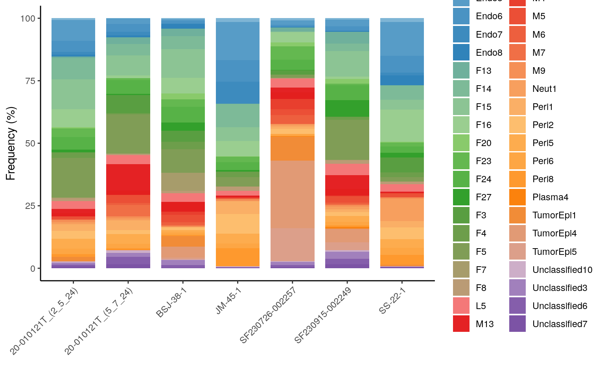
After treatment tumor
Cell type proportions by sample
post_treatment_tumor <- subset(arm3_tumor, subset = Timepoint %in% c(6, 12))
post_treatment_tumor <- post_treatment_tumor %>%
NormalizeData() %>%
ScaleData()
table(post_treatment_tumor$Patient_ID)
COH-022 COH-038 COH-045 MFL-040 MFL-043 MFL-046 MFL-049
735 5043 2293 4600 3119 15432 5169 table(as.character(post_treatment_tumor$Sample))
20-010121T_(3_26_24) 20-010121T_(6_19_24) BSJ-38-3
15432 5169 5043
JM-45-3 SF230912-002063 SF231027-005404
2293 4600 3119
SS-22-3
735 post_treatment_tumor@meta.data %>%
dplyr::select(c("Patient_ID", "Sample")) %>%
distinct() Patient_ID Sample
BSJ-38-3_TMA8_aaaalbkj-1_9 COH-038 BSJ-38-3
20-010121T_(6_19_24)_TMA8_aacodpjo-1_9 MFL-049 20-010121T_(6_19_24)
SF231027-005404_TMA8_admleojl-1_9 MFL-043 SF231027-005404
SS-22-3_TMA9_aagkmbko-1_10 COH-022 SS-22-3
JM-45-3_TMA9_abehepnb-1_10 COH-045 JM-45-3
SF230912-002063_TMA9_aecjangm-1_10 MFL-040 SF230912-002063
20-010121T_(3_26_24)_TMA9_aelaglgk-1_10 MFL-046 20-010121T_(3_26_24)create_barplot(post_treatment_tumor,
group_var = "Sample",
plot_var = "Celltype_Final",
plot_levels = sort((unique(post_treatment_tumor$"Celltype_Final"))),
group_levels = sort(unique(post_treatment_tumor$Sample)),
plot_colors = pipac_celltype_col,
var_names = c("Frequency (%)", ""),
legend_title = "Celltype")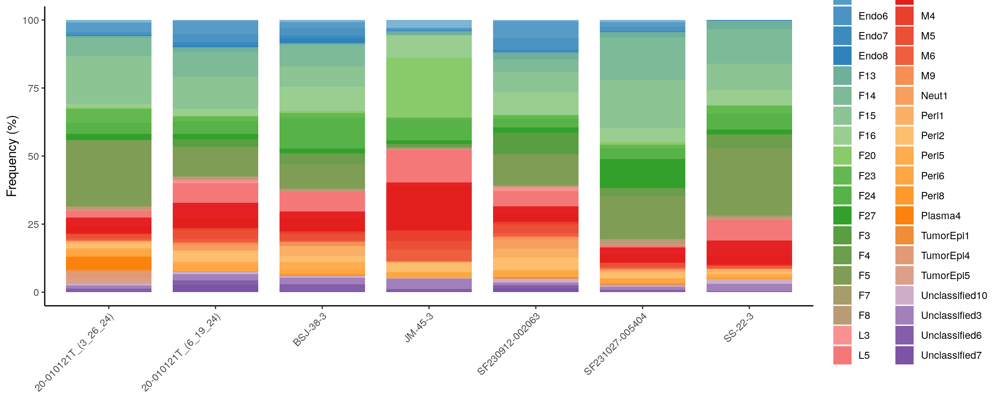
Tumor cell type proportion differences between timepoints (before and after treatment)
arm3_tumor$PrePost <- ifelse(arm3_tumor$Timepoint == 0, "Baseline", "Treated")
table(arm3_tumor$Celltype_Final, arm3_tumor$PrePost)
Baseline Treated
Endo2 333 307
Endo5 2294 1241
Endo6 1493 718
Endo7 685 185
Endo8 374 200
F13 1143 452
F14 2184 2683
F15 3692 4679
F16 2014 1537
F20 544 687
F23 1163 1121
F24 2451 1908
F27 1161 979
F3 1225 531
F4 630 449
F5 5100 5874
F7 473 96
F8 465 377
L5 1754 1755
M13 1886 1125
M2 1042 1527
M4 507 259
M5 1085 808
M6 557 381
M7 491 173
M9 274 239
Neut1 545 308
Peri1 1048 429
Peri2 1287 1001
Peri5 1182 341
Peri6 760 719
Peri8 689 83
Plasma4 74 748
TumorEpi1 1318 90
TumorEpi4 3473 465
TumorEpi5 1657 294
Unclassified10 261 285
Unclassified3 736 582
Unclassified6 721 449
Unclassified7 443 306create_barplot(arm3_tumor,
group_var = "PrePost",
plot_var = "Celltype_Final",
plot_levels = sort((unique(arm3_tumor$"Celltype_Final"))),
group_levels = sort(unique(arm3_tumor$PrePost)),
plot_colors = pipac_celltype_col,
var_names = c("Frequency (%)", ""),
legend_title = "Celltype")
prop_test <- sc_utils(arm3_tumor)
prop_test <- permutation_test(
prop_test, cluster_identity = "Celltype_Final",
sample_1 = "Baseline", sample_2 = "Treated",
sample_identity = "PrePost")
permutation_plot(prop_test) +
ggtitle("Baseline vs. treated")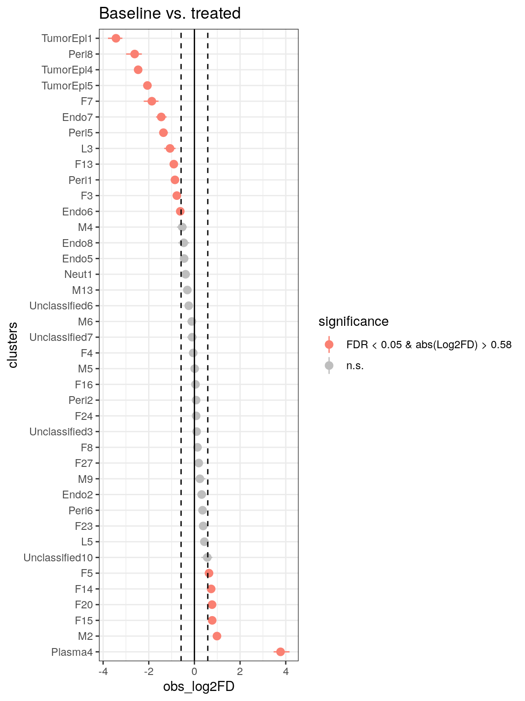
Tumor-adjacent cell type proportion differences between timepoints (before and after treatment)
arm3_normal$PrePost <- ifelse(arm3_normal$Timepoint == 0, "Baseline", "Treated")
table(arm3_normal$Celltype_Final, arm3_normal$PrePost)
Baseline Treated
Endo1 284 515
Endo5 1601 1308
Endo6 1370 658
Endo7 616 137
Endo8 635 207
F13 63 650
F14 1675 1341
F15 1376 1394
F16 1317 1440
F23 327 237
F24 1603 3356
F27 250 442
F3 1275 972
F4 533 415
F5 1631 3363
L5 373 1264
M13 444 2671
M2 204 825
M5 342 914
M7 57 448
Neut1 267 281
Peri1 1147 1014
Peri2 879 792
Peri5 832 398
Peri6 360 226
Peri8 331 220
Unclassified3 128 559
Unclassified8 352 384create_barplot(arm3_normal,
group_var = "PrePost",
plot_var = "Celltype_Final",
plot_levels = sort((unique(arm3_normal$"Celltype_Final"))),
group_levels = sort(unique(arm3_normal$PrePost)),
plot_colors = pipac_celltype_col,
var_names = c("Frequency (%)", ""),
legend_title = "Celltype")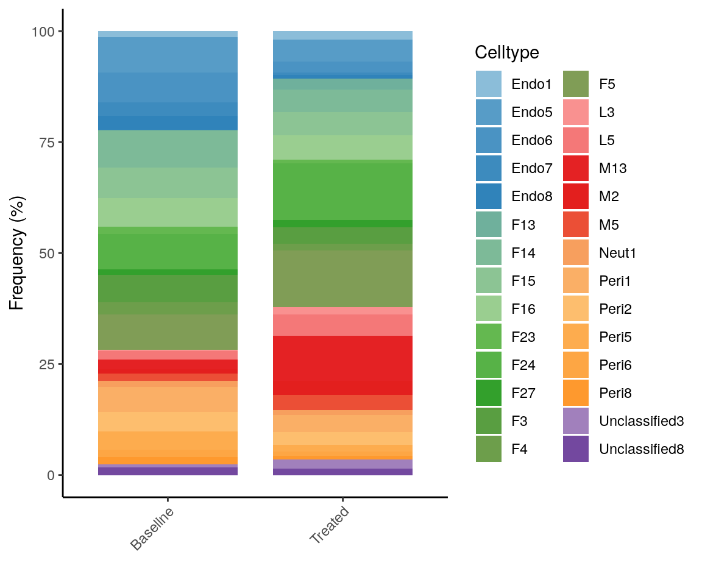
prop_test <- sc_utils(arm3_normal)
prop_test <- permutation_test(
prop_test, cluster_identity = "Celltype_Final",
sample_1 = "Baseline", sample_2 = "Treated",
sample_identity = "PrePost")
permutation_plot(prop_test) +
ggtitle("Baseline vs. treated")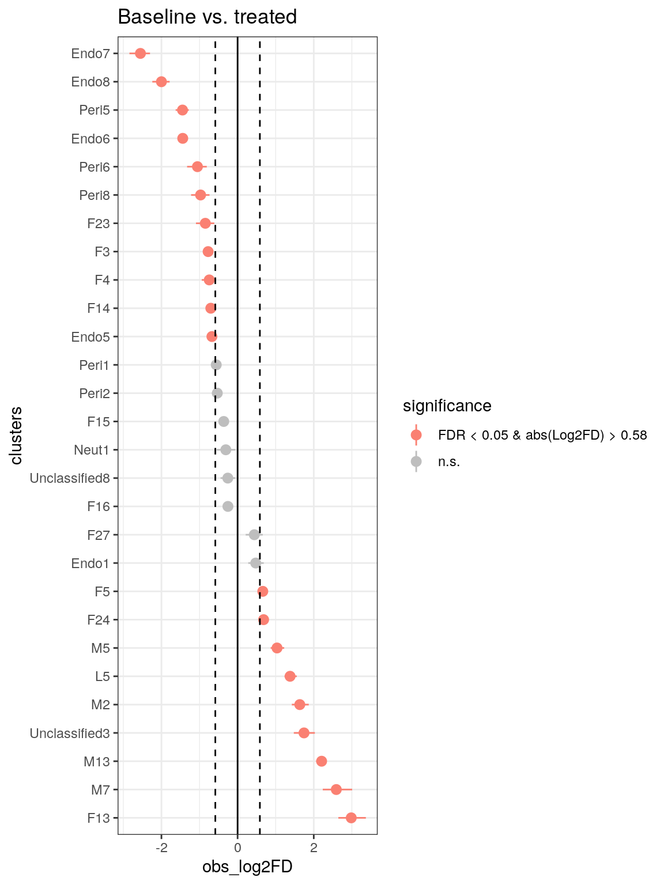
# Rscript -e "rmarkdown::render('arm3_comparative_analysis.Rmd')"CAF marker expression before and after treatment
Tumor tissue
arm3_tumor_fibro <- subset(arm3_tumor, subset = Celltype_Final %in% grep("^F", unique(seurat_arm3_subset$Celltype_Final), value = T))
arm3_normal_fibro <- subset(arm3_normal, subset = Celltype_Final %in% grep("^F", unique(seurat_arm3_subset$Celltype_Final), value = T))VlnPlot(arm3_tumor_fibro,
group.by = "PrePost",
features = unique(markers_by_group[which(markers_by_group$annotation1 == "Mesothelial"),]$feature),
ncol = 2,
pt.size = 0) &
xlab("") &
ylab("")meso <- c("MSLN", "KRT5I", "KRT6", "UPK3B", "LRRN4", "PDPN", "THBD", "KRT18", "KRT19")
VlnPlot(arm3_tumor_fibro,
group.by = "PrePost",
features = meso,
ncol = 5,
pt.size = 0) &
xlab("") &
ylab("")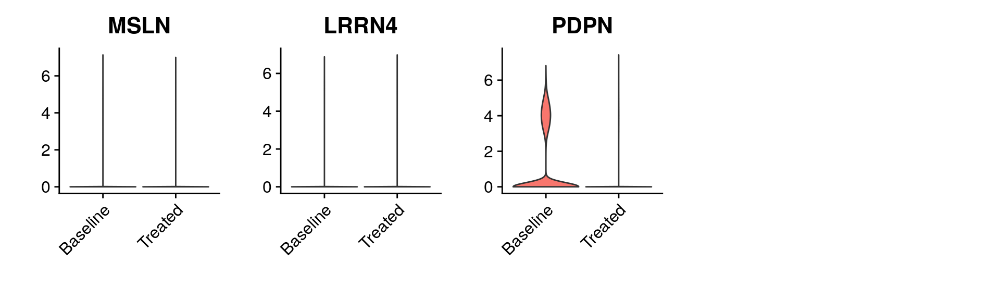
VlnPlot(arm3_tumor_fibro,
group.by = "PrePost",
features = unique(markers_by_group[which(markers_by_group$annotation1 == "CAFs"),]$feature),
ncol = 5,
pt.size = 0) &
xlab("") &
ylab("")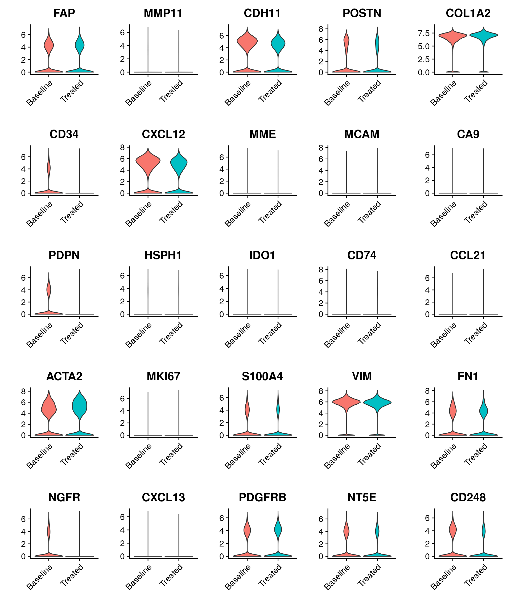
Tumor-adjacent tissue
VlnPlot(arm3_normal_fibro,
group.by = "PrePost",
features = unique(markers_by_group[which(markers_by_group$annotation1 == "Mesothelial"),]$feature),
ncol = 3,
pt.size = 0) &
xlab("") &
ylab("")VlnPlot(arm3_normal_fibro,
group.by = "PrePost",
features = meso,
ncol = 5,
pt.size = 0) &
xlab("") &
ylab("")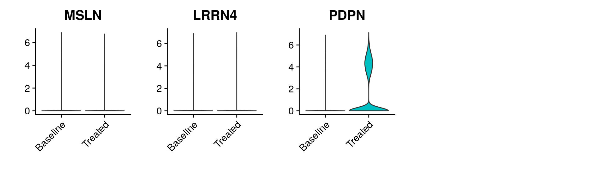
VlnPlot(arm3_normal_fibro,
group.by = "PrePost",
features = unique(markers_by_group[which(markers_by_group$annotation1 == "CAFs"),]$feature),
ncol = 5,
pt.size = 0) &
xlab("") &
ylab("")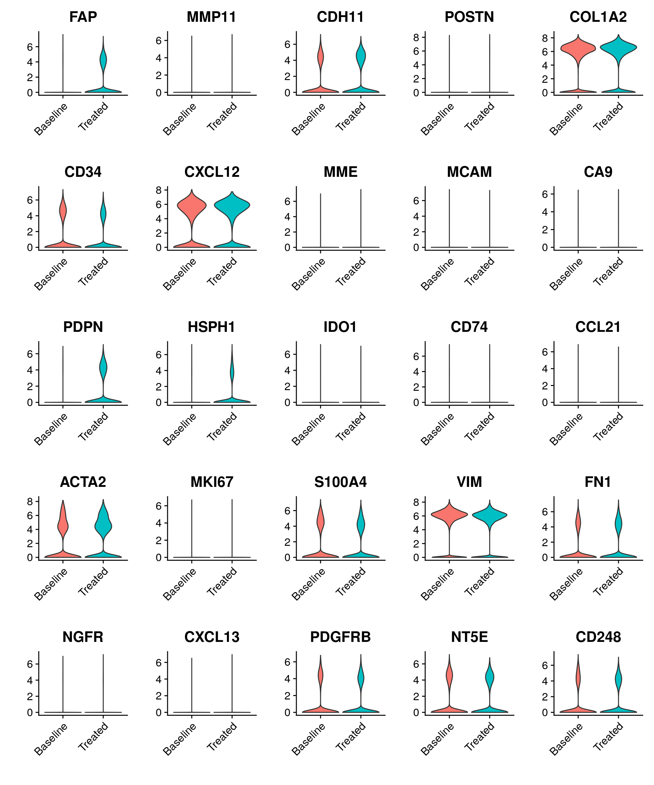
Myeloid marker expression before and after treatment
Tumor
arm3_tumor_myel <- subset(arm3_tumor, subset = Celltype_Final %in% grep("^M", unique(seurat_arm3_subset$Celltype_Final), value = T))
arm3_normal_myel <- subset(arm3_normal, subset = Celltype_Final %in% grep("^M", unique(seurat_arm3_subset$Celltype_Final), value = T))VlnPlot(arm3_tumor_myel,
group.by = "PrePost",
features = unique(markers_by_group[which(markers_by_group$annotation1 == "Macrophage signaling"),]$feature),
ncol = 5,
pt.size = 0) &
xlab("") &
ylab("")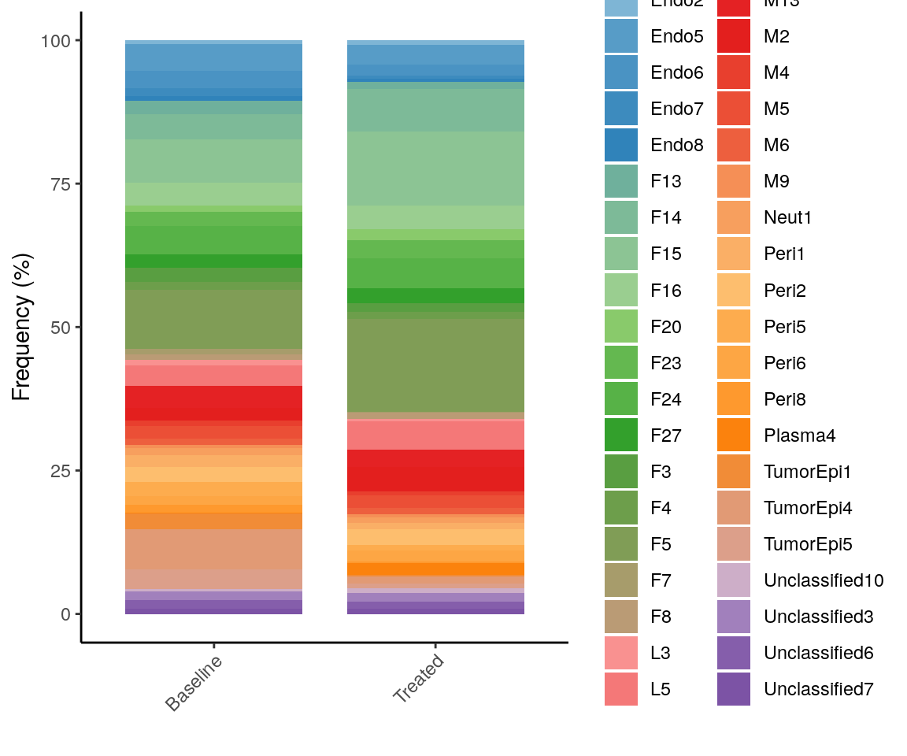
VlnPlot(arm3_tumor_myel,
group.by = "PrePost",
features = unique(markers_by_group[which(markers_by_group$annotation1 == "Macrophages"),]$feature),
ncol = 5,
pt.size = 0) &
xlab("") &
ylab("")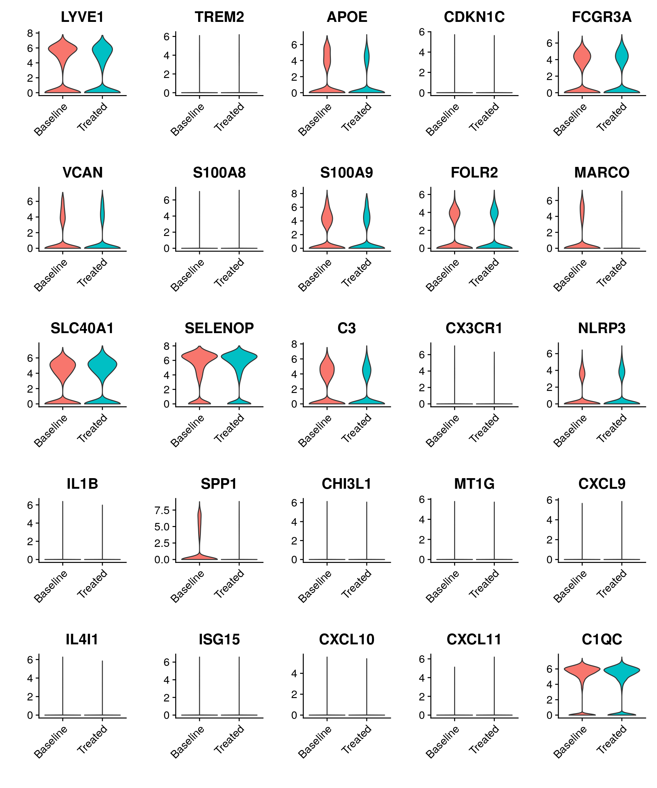
Tumor-adjacent
VlnPlot(arm3_normal_myel,
group.by = "PrePost",
features = unique(markers_by_group[which(markers_by_group$annotation1 == "Macrophage signaling"),]$feature),
ncol = 5,
pt.size = 0) &
xlab("") &
ylab("")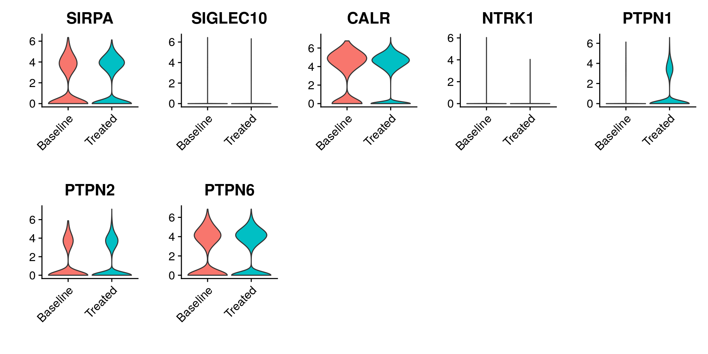
VlnPlot(arm3_normal_myel,
group.by = "PrePost",
features = unique(markers_by_group[which(markers_by_group$annotation1 == "Macrophages"),]$feature),
ncol = 5,
pt.size = 0) &
xlab("") &
ylab("")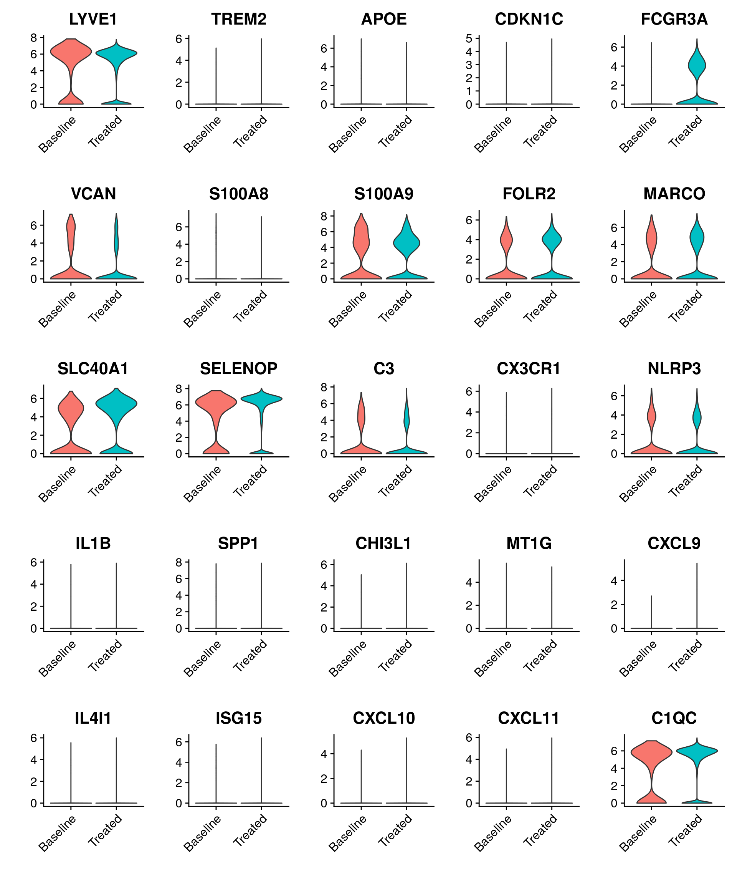
Lymphoid marker expression before and after treatment
Tumor
lymph_cts <- grep("^L", unique(seurat_arm3_subset$Celltype_Final), value = T)
lymph_cts <- c(lymph_cts, "B")
arm3_tumor_lymph <- subset(arm3_tumor, subset = Celltype_Final %in% lymph_cts)
arm3_normal_lymph <- subset(arm3_normal, subset = Celltype_Final %in% lymph_cts)VlnPlot(arm3_tumor_lymph,
group.by = "PrePost",
features = unique(markers_by_group[which(markers_by_group$annotation1 == "Macrophage signaling"),]$feature),
ncol = 5,
pt.size = 0) &
xlab("") &
ylab("")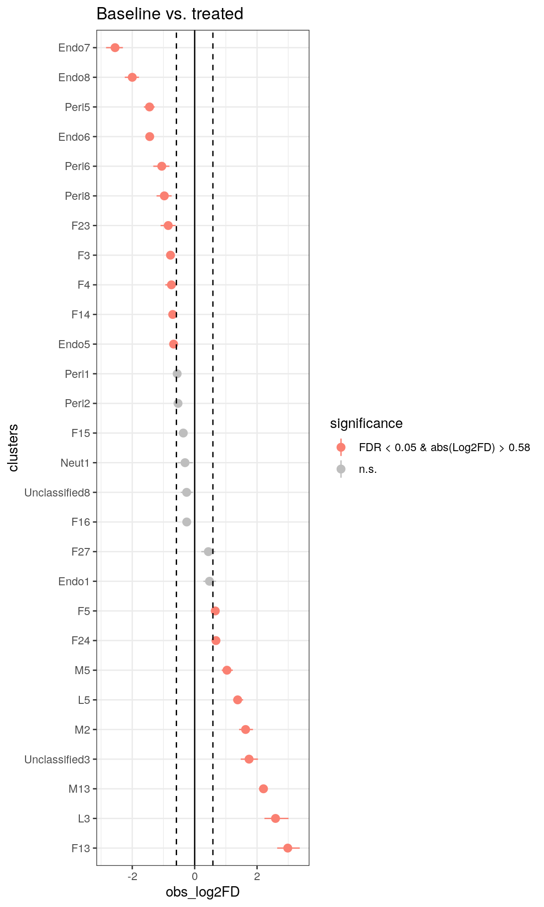
VlnPlot(arm3_tumor_lymph,
group.by = "PrePost",
features = unique(markers_by_group[which(markers_by_group$annotation1 == "Macrophages"),]$feature),
ncol = 5,
pt.size = 0) &
xlab("") &
ylab("")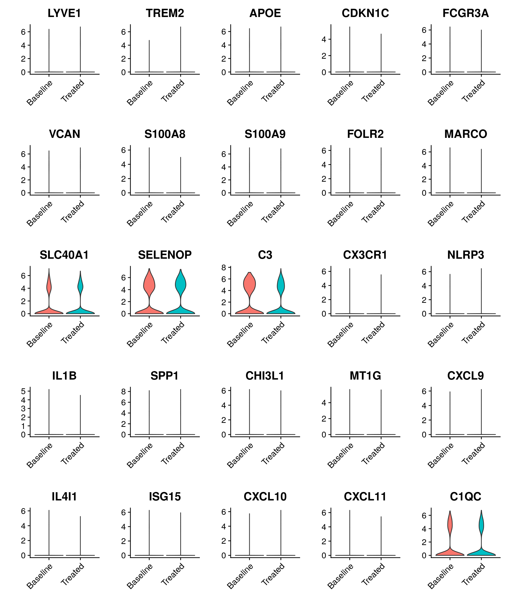
| Version | Author | Date |
|---|---|---|
| 3bbda19 | heinin | 2025-05-13 |
Tumor-adjacent
VlnPlot(arm3_normal_lymph,
group.by = "PrePost",
features = unique(markers_by_group[which(markers_by_group$annotation1 == "Macrophage signaling"),]$feature),
ncol = 5,
pt.size = 0) &
xlab("") &
ylab("")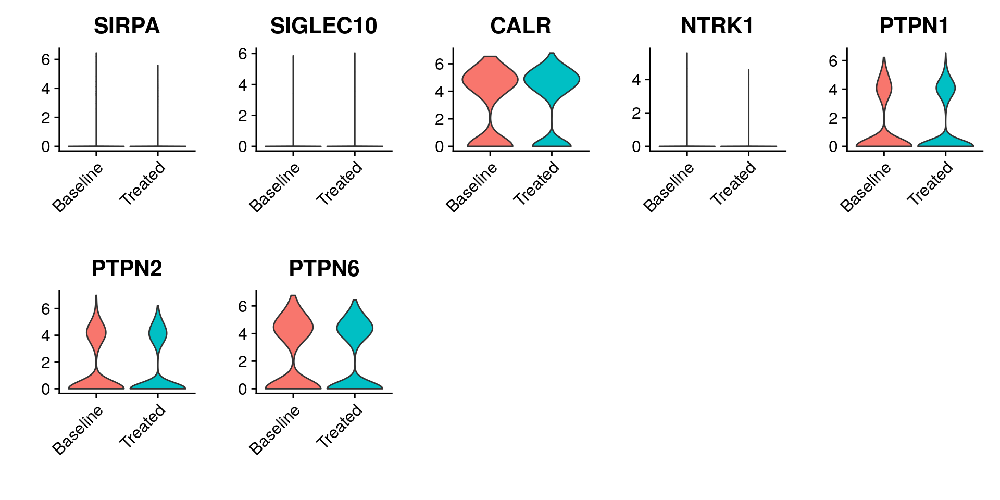
| Version | Author | Date |
|---|---|---|
| 3bbda19 | heinin | 2025-05-13 |
VlnPlot(arm3_normal_lymph,
group.by = "PrePost",
features = unique(markers_by_group[which(markers_by_group$annotation1 == "Macrophages"),]$feature),
ncol = 5,
pt.size = 0) &
xlab("") &
ylab("")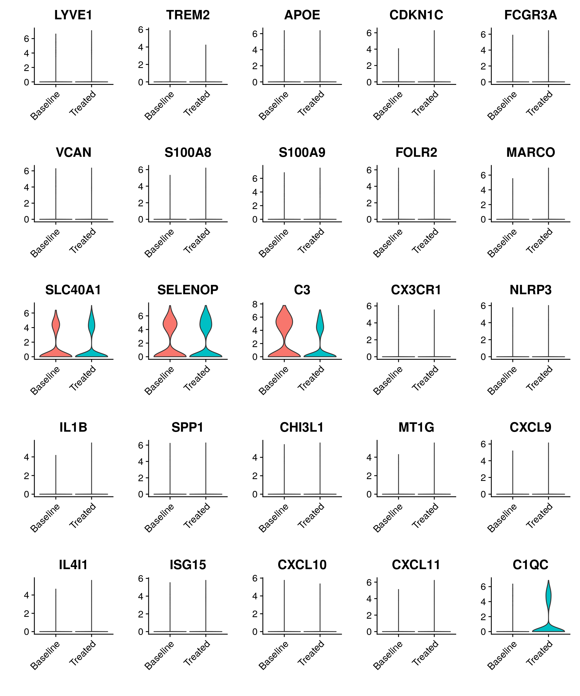
| Version | Author | Date |
|---|---|---|
| 3bbda19 | heinin | 2025-05-13 |
sessionInfo()R version 4.3.0 (2023-04-21)
Platform: x86_64-pc-linux-gnu (64-bit)
Running under: Ubuntu 22.04.3 LTS
Matrix products: default
BLAS: /usr/lib/x86_64-linux-gnu/openblas-pthread/libblas.so.3
LAPACK: /usr/lib/x86_64-linux-gnu/openblas-pthread/libopenblasp-r0.3.20.so; LAPACK version 3.10.0
locale:
[1] LC_CTYPE=en_US.UTF-8 LC_NUMERIC=C
[3] LC_TIME=en_US.UTF-8 LC_COLLATE=en_US.UTF-8
[5] LC_MONETARY=en_US.UTF-8 LC_MESSAGES=en_US.UTF-8
[7] LC_PAPER=en_US.UTF-8 LC_NAME=C
[9] LC_ADDRESS=C LC_TELEPHONE=C
[11] LC_MEASUREMENT=en_US.UTF-8 LC_IDENTIFICATION=C
time zone: Etc/UTC
tzcode source: system (glibc)
attached base packages:
[1] grid stats graphics grDevices utils datasets methods
[8] base
other attached packages:
[1] ComplexHeatmap_2.18.0 viridis_0.6.3
[3] viridisLite_0.4.2 circlize_0.4.15
[5] plyr_1.8.8 RColorBrewer_1.1-3
[7] scProportionTest_0.0.0.9000 ggpmisc_0.5.2
[9] ggpp_0.5.2 patchwork_1.1.2
[11] googlesheets4_1.1.0 ggrepel_0.9.3
[13] ggpubr_0.6.0 lubridate_1.9.2
[15] forcats_1.0.0 stringr_1.5.0
[17] dplyr_1.1.2 purrr_1.0.2
[19] readr_2.1.4 tidyr_1.3.0
[21] tibble_3.2.1 ggplot2_3.4.2
[23] tidyverse_2.0.0 SeuratDisk_0.0.0.9021
[25] Seurat_5.0.1 SeuratObject_5.0.2
[27] sp_1.6-1 arrow_21.0.0.1
[29] workflowr_1.7.1
loaded via a namespace (and not attached):
[1] RcppAnnoy_0.0.20 splines_4.3.0 later_1.3.1
[4] cellranger_1.1.0 polyclip_1.10-4 fastDummies_1.7.3
[7] lifecycle_1.0.3 rstatix_0.7.2 doParallel_1.0.17
[10] rprojroot_2.0.3 globals_0.16.2 processx_3.8.1
[13] lattice_0.21-8 hdf5r_1.3.8 MASS_7.3-60
[16] backports_1.4.1 magrittr_2.0.3 plotly_4.10.2
[19] sass_0.4.6 rmarkdown_2.22 jquerylib_0.1.4
[22] yaml_2.3.7 httpuv_1.6.11 sctransform_0.4.1
[25] spam_2.9-1 spatstat.sparse_3.0-1 reticulate_1.30
[28] cowplot_1.1.1 pbapply_1.7-0 abind_1.4-5
[31] Rtsne_0.16 BiocGenerics_0.48.1 git2r_0.32.0
[34] S4Vectors_0.40.2 IRanges_2.36.0 irlba_2.3.5.1
[37] listenv_0.9.0 spatstat.utils_3.0-3 MatrixModels_0.5-1
[40] goftest_1.2-3 RSpectra_0.16-1 spatstat.random_3.1-5
[43] fitdistrplus_1.1-11 parallelly_1.36.0 leiden_0.4.3
[46] codetools_0.2-19 shape_1.4.6 tidyselect_1.2.0
[49] farver_2.1.1 stats4_4.3.0 matrixStats_1.0.0
[52] spatstat.explore_3.2-1 googledrive_2.1.0 jsonlite_1.8.5
[55] GetoptLong_1.0.5 ellipsis_0.3.2 progressr_0.13.0
[58] iterators_1.0.14 ggridges_0.5.4 survival_3.5-5
[61] foreach_1.5.2 tools_4.3.0 ica_1.0-3
[64] Rcpp_1.0.10 glue_1.6.2 gridExtra_2.3
[67] xfun_0.39 withr_2.5.0 fastmap_1.1.1
[70] fansi_1.0.4 SparseM_1.81 callr_3.7.3
[73] digest_0.6.31 timechange_0.2.0 R6_2.5.1
[76] mime_0.12 colorspace_2.1-0 scattermore_1.2
[79] tensor_1.5 spatstat.data_3.0-1 utf8_1.2.3
[82] generics_0.1.3 data.table_1.14.8 httr_1.4.6
[85] htmlwidgets_1.6.2 whisker_0.4.1 uwot_0.1.14
[88] pkgconfig_2.0.3 gtable_0.3.3 lmtest_0.9-40
[91] htmltools_0.5.5 carData_3.0-5 dotCall64_1.0-2
[94] clue_0.3-64 scales_1.2.1 png_0.1-8
[97] knitr_1.43 rstudioapi_0.14 rjson_0.2.21
[100] tzdb_0.4.0 reshape2_1.4.4 curl_5.0.1
[103] nlme_3.1-162 GlobalOptions_0.1.2 cachem_1.0.8
[106] zoo_1.8-12 KernSmooth_2.23-21 vipor_0.4.5
[109] parallel_4.3.0 miniUI_0.1.1.1 ggrastr_1.0.2
[112] pillar_1.9.0 vctrs_0.6.5 RANN_2.6.1
[115] promises_1.2.0.1 car_3.1-2 xtable_1.8-4
[118] cluster_2.1.4 beeswarm_0.4.0 evaluate_0.21
[121] cli_3.6.1 compiler_4.3.0 rlang_1.1.6
[124] crayon_1.5.2 future.apply_1.11.0 ggsignif_0.6.4
[127] labeling_0.4.2 ps_1.7.5 ggbeeswarm_0.7.2
[130] getPass_0.2-4 fs_1.6.2 stringi_1.7.12
[133] deldir_1.0-9 assertthat_0.2.1 munsell_0.5.0
[136] lazyeval_0.2.2 spatstat.geom_3.2-1 quantreg_5.95
[139] Matrix_1.6-5 RcppHNSW_0.5.0 hms_1.1.3
[142] bit64_4.6.0-1 future_1.32.0 shiny_1.7.4
[145] highr_0.10 ROCR_1.0-11 gargle_1.4.0
[148] igraph_1.4.3 broom_1.0.5 bslib_0.5.0
[151] bit_4.0.5 polynom_1.4-1